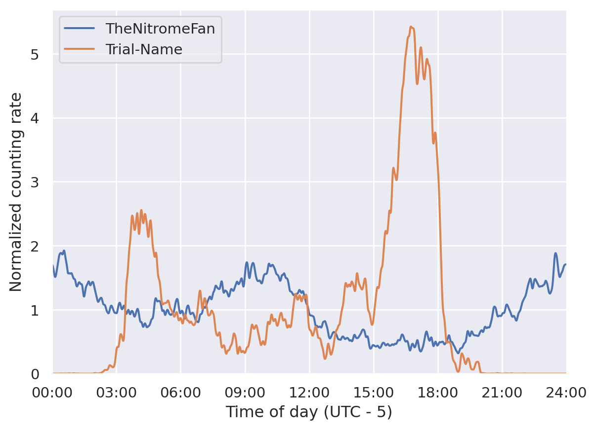

Reddit helpfully provides us with time stamps for each comment, so we know exactly when each count on the counting chain was made. This information can be used for a wealth of different things, but in this post I’ll focus on what the data can tell us about the daily rhythm of r/counting; about what time of day the subreddit is most active, and about how that has changed throughout the years.
We’ll start off with some code to import the relevant packages and load the data
Code for importing packages and loading data
from pathlib import Pathimport pandas as pdimport sqlite3import matplotlib.pyplot as pltimport numpy as npimport scipyfrom rcounting import counters, analysis, graph_tools, unitsimport seaborn as snssns.set_theme()from IPython.display import Markdowndata_directory = Path("../data")import networkx as nximport itertoolsdb = sqlite3.connect(data_directory /"counting.sqlite")counts = pd.read_sql("select username, timestamp from comments order by timestamp", db)counts["username"] = counts["username"].apply(counters.apply_alias)
The first thing we’ll look at is how the average rate of counts varies throughout the day. That’s shown on Figure 1.
Figure 1: The average rate of counts at different times of day. The horizontal line shows the global average.
You can see that the counting rate varies quite a bit - the most popular time (early afternoon EST) has an average counting rate that’s almost four times higher than the least popular time (late night/early morning EST). It’s also nice to have a feeling for what a “normal” rate of counting has been, and it turns that it’s on the order of one count per minute.
If the rate of counting were perfectly uniform, the chart would be perfectly flat. If every count was always made at precisely 12:00 there would be an infinitely tall spike right at the middle of the graph, and the rate would be zero at all other times. It would be nice to be able to quantify just how far away the distribution is from uniform. Some statisticians have come up with the Coefficient of Variation to do precisely that1; it says that the variation of a sample of values can be expressed as the ratio of the standard deviation to the mean. If we do this for our time of day data, we obtain
1 I spent 5 minutes playing with \(L^2\) norms before I realised I was reinventing the wheel
It’s of course also possible to calculate this variation for individual counters, and not just for all counters together. The counters in the top 30 with most and least variation are shown on Table 1.
Code
def get_tod_variation(group): x, kde = analysis.fft_kde(group['time'], nbins, kernel="normal_distribution", sigma=0.01)return np.sqrt(kde.var()) / kde.mean()top_counters = counts.groupby("username").size().sort_values(ascending=False).indextop_counters = [x for x in top_counters ifnot counters.is_banned_counter(x)][:30]top_30 = counts.query("username in @top_counters")tod_variations = top_30.groupby("username").apply(get_tod_variation).sort_values()head = pd.concat([tod_variations.head(3), tod_variations.tail(3)]) *100combined = head.to_frame("variation").join(pd.DataFrame(top_counters).reset_index().set_index(0))Markdown(combined.to_markdown(headers=["**Counter**", "**Time of day variation**", "**HOC position**"], floatfmt=".0f"))
Table 1: The most and least regular counters
Counter
Time of day variation
HOC position
TheNitromeFan
41
7
TehVulpez
51
21
atomicimploder
57
8
cupofmilo
109
25
LeMinerWithCheese
121
23
Trial-Name
130
11
As an aside, you should notice that even the most regular counter has a variation that is higher than the overall variation. Intuitively that makes sense - it’s harder for one person to evenly cover all 24 hours of the day than it is for all counters together. We can focus on the single least and most regular counters and look at how their counting rates have varied throughout the day. Here’s a plot of that:
Code
fig, ax = plt.subplots()for index in [0, -1]: username = tod_variations.index[index] x, kde = analysis.fft_kde(counts.query("username == @username")['time'], nbins, kernel="normal_distribution", sigma=0.01) ax.plot(x, kde / kde.mean(), label=username)ax.legend()ax.set_ylabel("Normalized counting rate")prettify(ax)

It’s not too surprising, but those distributions look very different!
The evolution of the counting distribution
The previous section provided one view into the activity on r/counting and how it’s qualitatively different for different people, and at different times of day. One potential issue with that analysis is that it’s a static view of the data, and thus ignores any changes there might have been over time. Different people have been active at different periods of time in r/counting history, and they’ve probably tended to count at different times of day. But the foregoing completely ignores that.
To see if (and how) the distributions of counts have changed over time it would in principle be possible to make a plot like Figure 1 for each year or month of activity on r/counting, and then compare them. Alternatively, we could add a third axis to the plot and make a single three-dimensional plot, which might show what we want. I always find those really difficult to read, so that doesn’t seem too appealing. On the other hand, if it were possible to show a single distribution in just one dimension instead of two, then we could put lots of those next to each other and build up a two-dimensional plot.
What I’ll do is split the timestamp of each count into a day component and a time of day component, and then plot the day on the x axis and the time of day on the y axis. This is done on figure Figure 2 in the form of a hexbin plot: the darker the colour of each hexagon, the more counts were made on that date and at that time of day.
Figure 2: An illustration of every count made on the main thread; the darker the colour of any particular hexagon, the more counts were made in the area it covers.
The plot is a bit difficult to follow, and that’s kind of the point – it’s trying to cram a lot of data into not very many pixels. On the right, you can see the global time of day distribution; that’s basically the same as what’s plotted in Figure 1, but stretched out a bit. On top, you can see the overall counting rate which is very spiky. You can see how the rate was basically zero in 2012; and then was higher but still low until late 2015 where it shot up. In 2016 and 2017 the rate was high, but gradually falling to a minimum in late 2017, followed by an increase to very high levels in late 2019. Since then, the rate has generally been much lower, but with two important peaks.
Turning to the joint plot, it tries to show both of these things at the same time. It’s illustrative perhaps to compare the counting activity in early 2016 with that in early 2020. The top histogram shows that the counting rates at these two times was roughly similar, but the main chart reveals that how these counts took place was very different. In 2016, the counting activity was spread out throughout the day, with a small dip between 04:00 and 07:00. In 2020, there was a pronounced peak of activity between 13:00 and 19:00, a smaller peak centered at 04:00 and much less activity throughout the rest of the day.
We can also look at the peak in early 2021. This one shows a lot of activity from 10:00 to 17:00, with a small dip at around 13:00. Perhaps one of the people involved had to go for lunch.
Summary statistics and the circular mean
Creating and looking at the hexbin plot let us confirm the fact that just showing the average distribution hides a lot of structure. In particular, we can see that
The counting rate varies a lot over time
The time of day distribution also changes a lot
Quantitatively, it’s difficult to say more than that based on the figure. There’s just too much going on, and it would be nice if we could simplify it.
What we’d really need is some kind of summary statistic for a time of day distribution, because then we can easily plot how that summary statistic varies over time. An obvious first choice could be the mean of the distribution, to represent what time of day the average count takes place.
Unfortunately, it’s not so simple. The time of day data is circular, and the standard mean is badly suited for this use case. To illustrate, we can consider what the average time is of two events, one occurring at 23:59 and the other at 00:001. If we just use the linear mean, we arrive at 12:00, but intuitively the answer should be 00:00.
What we can use instead is the circular mean. You can imagine this as pretending we have a 24h analog clock, and each event is an arrow points to its correct time. The arrow tail is at (0, 0), and the arrow head is at position (x, y), corresponding to whatever time it is. What we want to do is to find the average angle of all the arrows, and to do that we average all the x positions separately, and all the y positions separately, and create a new arrow that points to (average x, average y). The angle we want is then the angle of this arrow.
We can do that for the overall counting distribution to obtain
Code
mean = scipy.stats.circmean(counts['time'], high=units.DAY)hour, rem =divmod(mean, 3600)minute, second =divmod(rem, 60)print(f"The mean of the overall distribution is {int(hour):02d}:{int(minute):02d}")
The mean of the overall distribution is 16:33
That seems reasonable - it’s inside the broad afternoon peak of activity, but slightly to the right, since there’s more activity in the evening than in the early morning.
With the summary statistic in hand, we can plot how the mean time of day of counts has varied over time
This analysis shows that from the start of r/counting until 2023, the average time of day of each count has drifted by about six hours. More precisely, we can say that
Code
Markdown(f"the average time has shifted by {np.polyfit(rolling['numerical_date'], rolling['time_of_day'], 1)[0]:.1f} seconds per day.")
the average time has shifted by -6.3 seconds per day.
This shift is not something that was at all apparent from Figure 2, which shows the value of the summary statistic for revealing trends in the data.
Source Code
---title: "Tick tock: looking at counting activity over time"---Reddit helpfully provides us with time stamps for each comment, so we know exactly when each count on the counting chain was made. This information can be used for a wealth of different things, but in this post I'll focus on what the data can tell us about the daily rhythm of r/counting; about what time of day the subreddit is most active, and about how that has changed throughout the years.We'll start off with some code to import the relevant packages and load the data```{python}#| code-fold: true#| code-summary: "Code for importing packages and loading data"from pathlib import Pathimport pandas as pdimport sqlite3import matplotlib.pyplot as pltimport numpy as npimport scipyfrom rcounting import counters, analysis, graph_tools, unitsimport seaborn as snssns.set_theme()from IPython.display import Markdowndata_directory = Path("../data")import networkx as nximport itertoolsdb = sqlite3.connect(data_directory /"counting.sqlite")counts = pd.read_sql("select username, timestamp from comments order by timestamp", db)counts["username"] = counts["username"].apply(counters.apply_alias)```The first thing we'll look at is how the average rate of counts varies throughout the day. That's shown on @fig-kde.```{python}#| label: fig-kde#| fig-cap: The average rate of counts at different times of day. The horizontal line shows the global average.offset =5* units.HOURfig, ax = plt.subplots(1)nbins =int(units.DAY /30)counts['time'] = (counts['timestamp'] - offset) % units.DAYdt = counts['timestamp'].iat[-1] - counts['timestamp'].iat[0]avg_counts_per_day =len(counts) / dt * units.DAYx, kde = analysis.fft_kde(counts['time'], nbins, kernel="normal_distribution", sigma=0.01)kde = kde * avg_counts_per_day * units.MINUTEax.fill_between(x, kde, alpha=0.8)ax.axhline(len(counts) / dt * units.MINUTE, color="0.7", linestyle="--")ticks, labels =zip(*[(x * units.HOUR, f"{x:02d}:00") for x inrange(0, 25, 3)])def prettify(ax): ax.set_xlim(0, units.DAY +1) ax.set_xticks(ticks) ax.set_xticklabels(labels) ax.set_ylim(bottom=0) ax.set_xlabel("Time of day (UTC - 5)")ax.set_ylabel("Average rate [counts/minute]")prettify(ax)```You can see that the counting rate varies quite a bit - the most popular time (early afternoon EST) has an average counting rate that's almost four times higher than the least popular time (late night/early morning EST). It's also nice to have a feeling for what a "normal" rate of counting has been, and it turns that it's on the order of **one count per minute**.If the rate of counting were perfectly uniform, the chart would be perfectly flat. If every count was always made at precisely 12:00 there would be an infinitely tall spike right at the middle of the graph, and the rate would be zero at all other times. It would be nice to be able to quantify just how far away the distribution is from uniform. Some statisticians have come up with the [Coefficient of Variation](https://en.wikipedia.org/wiki/Coefficient_of_variation) to do precisely that[^1]; it says that the variation of a sample of values can be expressed as the ratio of the standard deviation to the mean. If we do this for our time of day data, we obtain```{python}print(f"{np.sqrt(kde.var()) / kde.mean() *100:.1f}%.")```It's of course also possible to calculate this variation for individual counters, and not just for all counters together. The counters in the top 30 with most and least variation are shown on @tbl-variation.```{python}#| label: tbl-variation#| tbl-cap: The most and least regular countersdef get_tod_variation(group): x, kde = analysis.fft_kde(group['time'], nbins, kernel="normal_distribution", sigma=0.01)return np.sqrt(kde.var()) / kde.mean()top_counters = counts.groupby("username").size().sort_values(ascending=False).indextop_counters = [x for x in top_counters ifnot counters.is_banned_counter(x)][:30]top_30 = counts.query("username in @top_counters")tod_variations = top_30.groupby("username").apply(get_tod_variation).sort_values()head = pd.concat([tod_variations.head(3), tod_variations.tail(3)]) *100combined = head.to_frame("variation").join(pd.DataFrame(top_counters).reset_index().set_index(0))Markdown(combined.to_markdown(headers=["**Counter**", "**Time of day variation**", "**HOC position**"], floatfmt=".0f"))```As an aside, you should notice that even the most regular counter has a variation that is higher than the overall variation. Intuitively that makes sense - it's harder for one person to evenly cover all 24 hours of the day than it is for all counters together. We can focus on the single least and most regular counters and look at how their counting rates have varied throughout the day. Here's a plot of that:```{python}fig, ax = plt.subplots()for index in [0, -1]: username = tod_variations.index[index] x, kde = analysis.fft_kde(counts.query("username == @username")['time'], nbins, kernel="normal_distribution", sigma=0.01) ax.plot(x, kde / kde.mean(), label=username)ax.legend()ax.set_ylabel("Normalized counting rate")prettify(ax)```It's not too surprising, but those distributions look very different!# The evolution of the counting distributionThe previous section provided one view into the activity on r/counting and how it's qualitatively different for different people, and at different times of day. One potential issue with that analysis is that it's a static view of the data, and thus ignores any changes there might have been over time. Different people have been active at different periods of time in r/counting history, and they've probably tended to count at different times of day. But the foregoing completely ignores that.To see if (and how) the distributions of counts have changed over time it would in principle be possible to make a plot like @fig-kde for each year or month of activity on r/counting, and then compare them. Alternatively, we could add a third axis to the plot and make a single three-dimensional plot, which might show what we want. I always find those really difficult to read, so that doesn't seem too appealing. On the other hand, if it were possible to show a single distribution in just one dimension instead of two, then we could put lots of those next to each other and build up a two-dimensional plot.What I'll do is split the timestamp of each count into a day component and a **time of day** component, and then plot the day on the x axis and the time of day on the y axis. This is done on figure @fig-hexbin in the form of a hexbin plot: the darker the colour of each hexagon, the more counts were made on that date and at that time of day.```{python}#| label: fig-hexbin#| fig-cap: An illustration of every count made on the main thread; the darker the colour of any particular hexagon, the more counts were made in the area it covers.sns.set_theme(style="ticks")import matplotlib.dates as mdatescounts['date'] = pd.to_datetime(counts['timestamp'], unit='s')counts['numerical_date'] = mdates.date2num(counts['date'])counts['flipped_time'] = units.DAY - counts['time']grid = sns.jointplot(x='numerical_date', y='flipped_time', kind="hex", data=counts,)grid.set_axis_labels()ax = grid.ax_jointdef prettify_timeseries(ax): ax.xaxis_date() locator = mdates.AutoDateLocator(minticks=3, maxticks=7) formatter = mdates.ConciseDateFormatter(locator) ax.xaxis.set_major_locator(locator) ax.xaxis.set_major_formatter(formatter) ax.set_xlim([counts['numerical_date'].min(), counts['numerical_date'].max()]) ax.set_yticks(units.DAY - np.array(ticks)) ax.set_yticklabels(labels) ax.set_ylim([0, units.DAY]) ax.set_xlabel("Date") ax.set_ylabel("Time of Day (UTC - 5)")prettify_timeseries(ax)```The plot is a bit difficult to follow, and that's kind of the point – it's trying to cram a lot of data into not very many pixels. On the right, you can see the global time of day distribution; that's basically the same as what's plotted in @fig-kde, but stretched out a bit. On top, you can see the overall counting rate which is very spiky. You can see how the rate was basically zero in 2012; and then was higher but still low until late 2015 where it shot up. In 2016 and 2017 the rate was high, but gradually falling to a minimum in late 2017, followed by an increase to very high levels in late 2019. Since then, the rate has generally been much lower, but with two important peaks.Turning to the joint plot, it tries to show both of these things at the same time. It's illustrative perhaps to compare the counting activity in early 2016 with that in early 2020. The top histogram shows that the counting rates at these two times was roughly similar, but the main chart reveals that how these counts took place was very different. In 2016, the counting activity was spread out throughout the day, with a small dip between 04:00 and 07:00. In 2020, there was a pronounced peak of activity between 13:00 and 19:00, a smaller peak centered at 04:00 and much less activity throughout the rest of the day.We can also look at the peak in early 2021. This one shows a lot of activity from 10:00 to 17:00, with a small dip at around 13:00. Perhaps one of the people involved had to go for lunch.## Summary statistics and the circular meanCreating and looking at the hexbin plot let us confirm the fact that just showing the average distribution hides a lot of structure. In particular, we can see that1. The counting rate varies a lot over time2. The time of day distribution also changes a lotQuantitatively, it's difficult to say more than that based on the figure. There's just too much going on, and it would be nice if we could simplify it.What we'd really need is some kind of summary statistic for a time of day distribution, because then we can easily plot how that summary statistic varies over time. An obvious first choice could be the mean of the distribution, to represent what time of day the average count takes place.Unfortunately, it's not so simple. The time of day data is circular, and the standard mean is badly suited for this use case. To illustrate, we can consider what the average time is of two events, one occurring at 23:59 and the other at 00:001. If we just use the linear mean, we arrive at 12:00, but intuitively the answer should be 00:00.What we can use instead is the [circular mean](https://en.wikipedia.org/wiki/Circular_mean). You can imagine this as pretending we have a 24h analog clock, and each event is an arrow points to its correct time. The arrow tail is at (0, 0), and the arrow head is at position (x, y), corresponding to whatever time it is. What we want to do is to find the average angle of all the arrows, and to do that we average all the x positions separately, and all the y positions separately, and create a new arrow that points to (average x, average y). The angle we want is then the angle of this arrow.We can do that for the overall counting distribution to obtain```{python}mean = scipy.stats.circmean(counts['time'], high=units.DAY)hour, rem =divmod(mean, 3600)minute, second =divmod(rem, 60)print(f"The mean of the overall distribution is {int(hour):02d}:{int(minute):02d}")```That seems reasonable - it's inside the broad afternoon peak of activity, but slightly to the right, since there's more activity in the evening than in the early morning.With the summary statistic in hand, we can plot how the mean time of day of counts has varied over time```{python}counts.set_index('date', inplace=True)counts['x'] = np.cos(counts['time'] / units.DAY *2* np.pi)counts['y'] = np.sin(counts['time'] / units.DAY *2* np.pi)rolling = counts[['x', 'y', 'numerical_date']].rolling('28d').mean()rolling['time_of_day'] = (np.arctan2(rolling['y'], rolling['x']) * units.DAY /2/ np.pi) % units.DAYrolling = rolling.resample('7d').mean()``````{python}sns.set_theme()fig, ax = plt.subplots()rolling["seconds_to_midnight"] = units.DAY - rolling["time_of_day"]ax = sns.regplot(x="numerical_date", y="seconds_to_midnight", data=rolling)prettify_timeseries(ax)```This analysis shows that from the start of r/counting until 2023, the average time of day of each count has drifted by about six hours. More precisely, we can say that```{python}Markdown(f"the average time has shifted by {np.polyfit(rolling['numerical_date'], rolling['time_of_day'], 1)[0]:.1f} seconds per day.")```This shift is not something that was at all apparent from @fig-hexbin, which shows the value of the summary statistic for revealing trends in the data.[^1]: I spent 5 minutes playing with $L^2$ norms before I realised I was reinventing the wheel